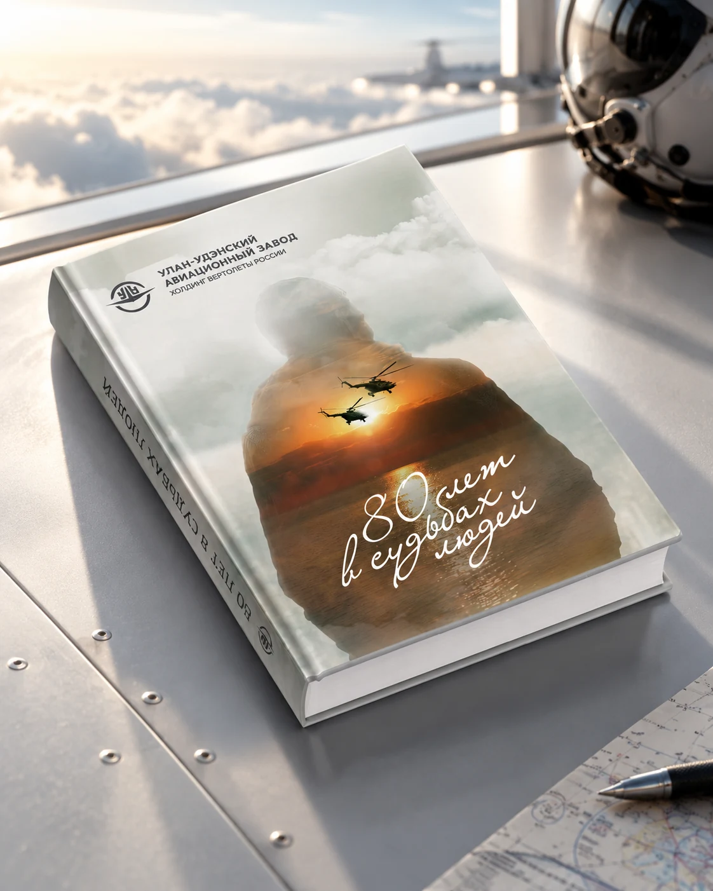
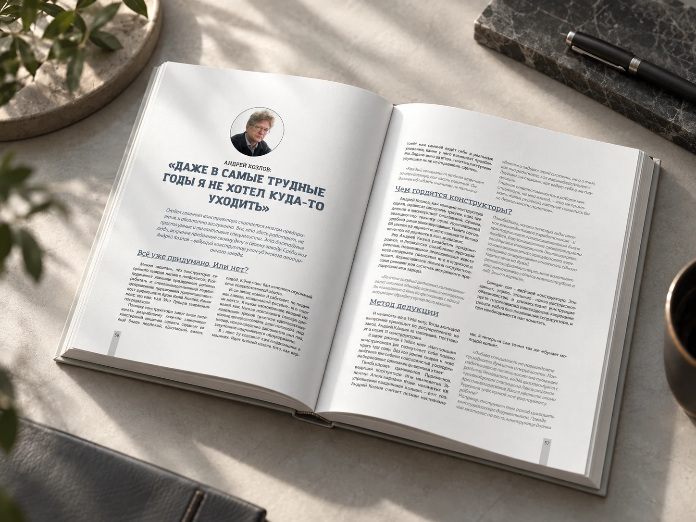
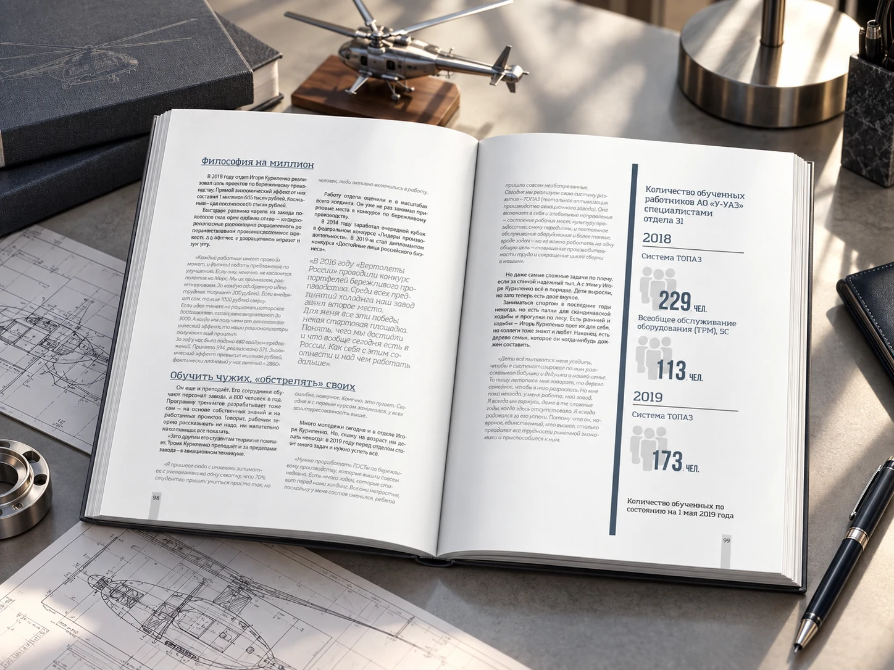
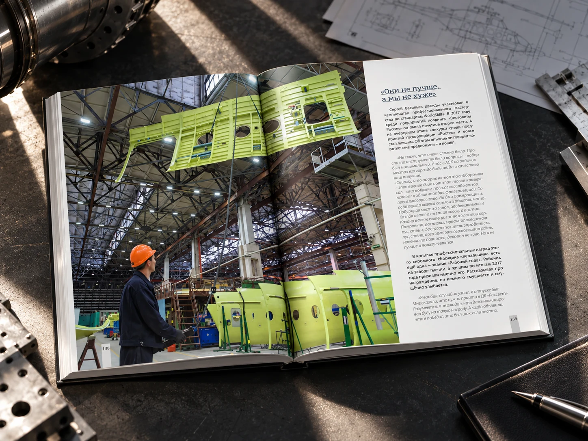
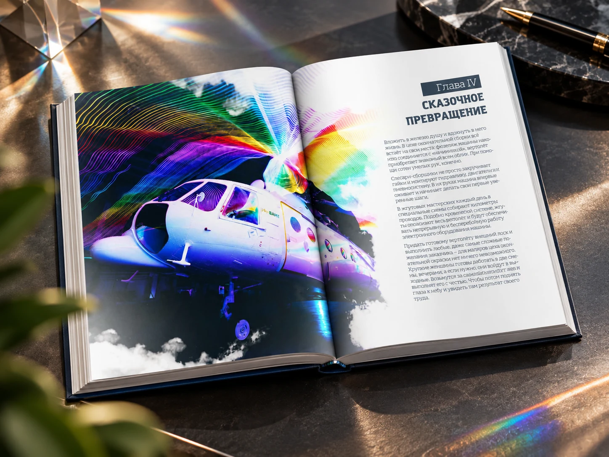
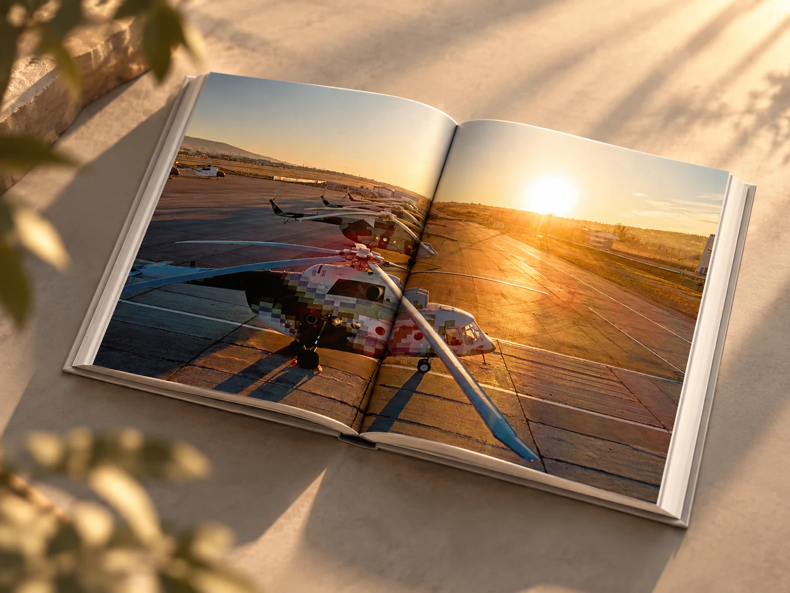
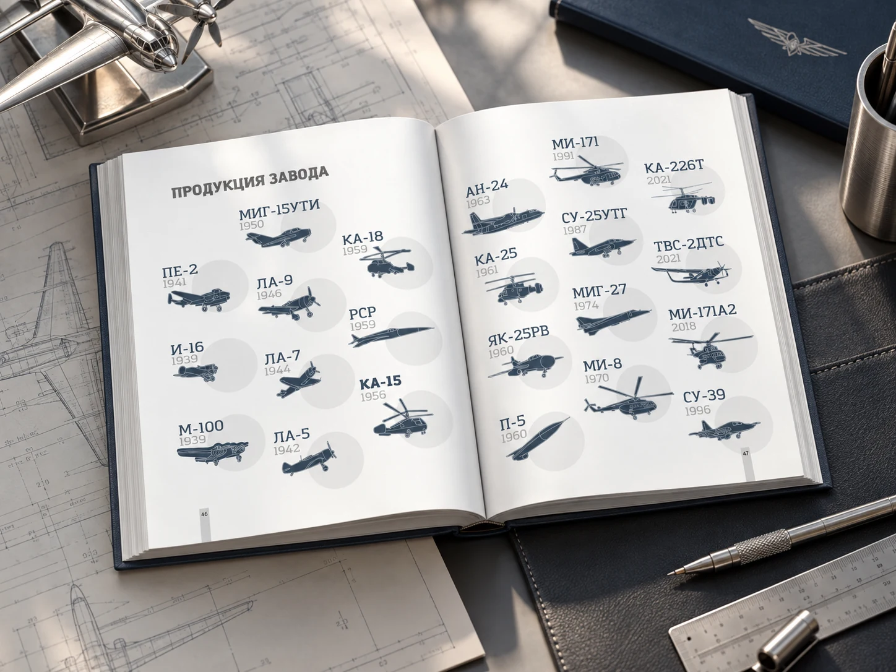
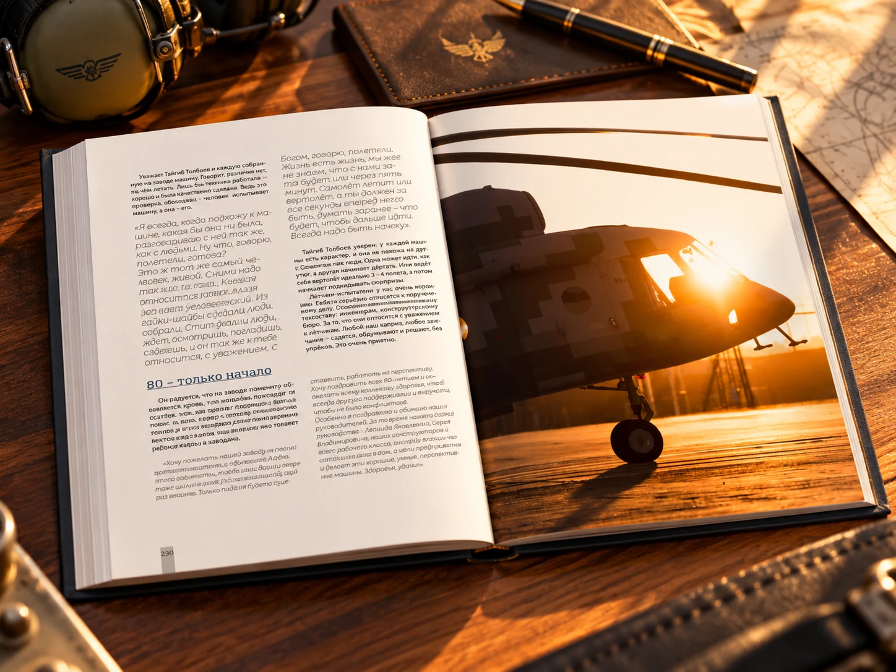

УЛАН-УДЭНСКИЙ АВИАЦИОННЫЙ ЗАВОД / ЮБИЛЕЙНАЯ КНИГА
80 лет
в судьбах людей.

01 / ИЗДАНИЕ
История завода
через людей и машины.
Юбилейная книга соединяет фотографии производства и авиации с интервью, хроникой и справочными материалами. Вёрстка даёт снимкам пространство, а тексты выстраивает в удобный для чтения ритм.



02 / ФОТОГРАФИИ
Масштаб производства.
Масштаб полёта.
Панорамные кадры цехов, аэродрома и воздушных судов чередуются с текстовыми полосами. Так книга сохраняет живое ощущение места и позволяет рассмотреть детали.




03 / ПЕЧАТЬ
Цвет и детали
в готовой книге.
Издание напечатано в Красноярске, в типографии «Ситал», в шесть красок для более яркой передачи фотографий. Отдельные элементы выделены выборочным лаком.
